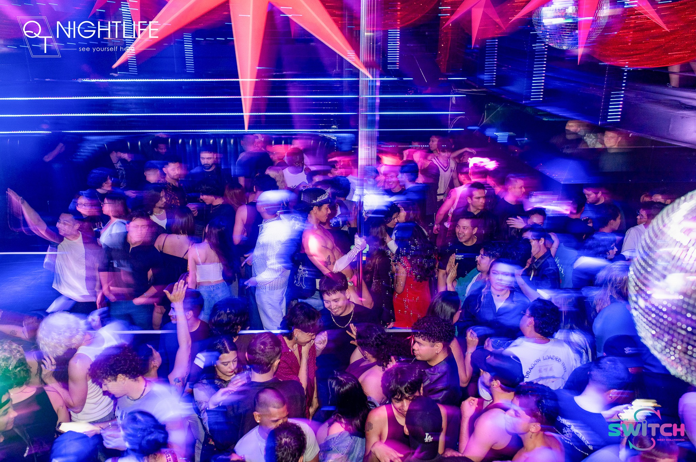
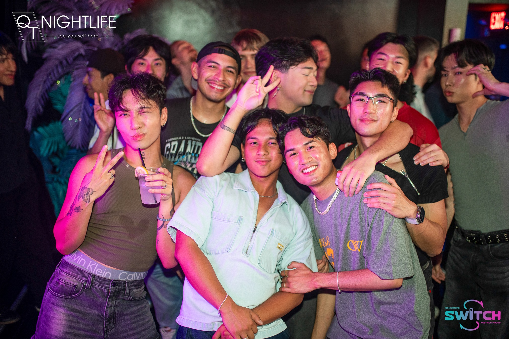

Switch WeHo
Our flagship LA night at Beaches Tropicana in West Hollywood — built for queer and trans nightlife with a QTPOC dance floor at the center.
VIP Bottle Service QT Nightlife
QT Nightlife
// The Lineup
Our flagship LA night at Beaches Tropicana in West Hollywood — built for queer and trans nightlife with a QTPOC dance floor at the center.
VIP Bottle ServiceThe Bay Area's home for queer and trans community on the dance floor. Big sound, bigger crowd.
VIP Bottle ServiceSwitch's East Coast counterpart — same ethos, different skyline. Built for NYC's QTPOC community.
A K-Pop-fueled party rotating between coasts. Bias tracks all night, every night.
A pop circuit party that keeps it light. Dress down, sweat it out.

// Blog Posts

// In the News